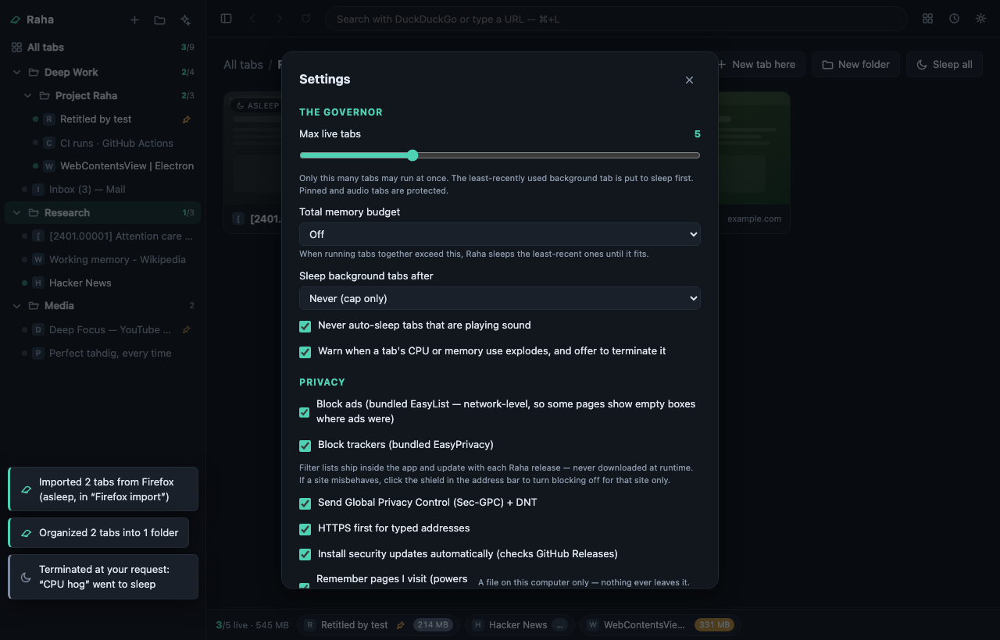

The details
Everything the front page leaves out: how the governor decides, what Raha does and does not send, the security audit, and the keyboard map.
The governor
The heart of Raha is ~150 lines of pure, exhaustively-tested policy (src/shared/policy.js). In precedence order:
- Per-tab memory limit — a tab over its own limit goes to sleep, even a pinned one (you asked for that limit). The active tab is never yanked — you get a warning instead.
- Idle timer (off by default) — background tabs idle longer than N minutes go to sleep.
- Live-tab cap — beyond the cap, the least-recently-used background tab sleeps first. Pinned, audible, and active tabs are protected.
- Global memory budget (off by default) — if running tabs together exceed your budget, LRU eviction until they fit.
Sleeping is real: the renderer process is destroyed and the RAM goes back to your OS (why) — not merely throttled or hidden. Navigation history survives; back and forward work after waking.
Organization is spatial
Nested folders, thumbnail grids, drag & drop. A restart brings your whole tree back asleep: instant start, ~0 tab memory, nothing lost.
Private by architecture
- Telemetry, phone-home
- No telemetry, ever. Raha itself contacts exactly one server: GitHub Releases, for the optional security-update check — on by default, one toggle to silence it. Note the chrome also loads favicons directly from the sites in your tab list, including on a cold start with every tab asleep.
- Tracker / ad blocking
- EasyList + EasyPrivacy via Ghostery’s open-source engine — lists bundled with the app, never fetched at runtime. Separate ads/trackers toggles, per-site off switch on the address-bar shield.
- Global Privacy Control
Sec-GPC: 1+DNT: 1on every request made by a page (toggleable).- Permission requests
- Camera, microphone, location, notifications, clipboard: asked per site in Raha’s own prompt — allow once / always / never — never granted silently, never a surprise system dialog. Everything else a page asks for is refused, visibly.
- Default search
- DuckDuckGo (Brave / Startpage / Ecosia / Google / Bing / Kagi selectable; Kagi needs your own Kagi account).
- New tab page
- Local. Loads nothing.
- HTTPS
- HTTPS-first for typed addresses; explicit opt-in for plain-HTTP fallback.
- Web content isolation
- Chromium sandbox on; no preload, no bridge in page processes.
- What a page may open
- Only
http:/https:/raha:/blob:— a site cannot make Raha openfile:///…or a fakedata:login page in your chrome. - Supply chain
- Two direct runtime dependencies — the updater and the filter-list engine, both pinned exact, each with a public decision record. With transitives, 28 npm packages ship inside the app alongside Electron — verify with
npm ls --omit=dev --all. Everything else is the project’s own code, and the invariants are enforced by tests.
Honesty note: Raha is Chromium under the hood (via Electron, ~100 MB installed). The “light” we promise is runtime discipline — 60 tabs open, only your chosen few consuming anything — not installer size. Fingerprinting resistance is on the roadmap and won’t be claimed before it’s real.

Security, with receipts
Before its first release, Raha went through a security audit against Electron’s official checklist: eight findings, all fixed pre-launch, report public — including the accepted risks, because a security story that hides its trade-offs isn’t one. Every audit check re-runs as an automated test suite on every push, alongside hundreds of unit tests, a UI harness in real Chromium, and an end-to-end suite on real Electron.
Found something exploitable? Please don’t open a public issue — use private reporting.
Keyboard
Ctrl/⌘ T new tab · Ctrl/⌘ W close · Ctrl/⌘ ⇧ T reopen closed tab · Ctrl/⌘ F find in page · Ctrl/⌘ L address bar · Ctrl/⌘ ⇧ R hard reload · Ctrl/⌘ E grid/home · Ctrl/⌘ ⇧ B sidebar · ⌘ Y/Ctrl H history · Ctrl Tab cycle running tabs · Ctrl/⌘ 1…9 jump to running tab · Ctrl/⌘ ⇧ S sleep this tab · Ctrl/⌘ ⇧ A sleep everything · Ctrl/⌘ ⇧ K pin · Ctrl/⌘ , settings
Support
Raha is one person and a public, numbered roadmap. It’s free, GPL, and has no business model — there is nothing to pay for, no subscription, no product.
If it’s been useful and you feel like leaving something: support Raha via Venmo.
Bugs and ideas: file issues generously. Want to build? Start at CONTRIBUTING.md, then ARCHITECTURE.md for the layer map and the decision records for why each trade-off went the way it did — the codebase is deliberately structured for safe iteration by humans and AI agents alike.
Raha was written with agentic coding: an AI did much of the typing, a human decided what to build, read what came back, and ran it. It’s offered in that spirit — take it, fork it, make it your own. And keep one eye open: language models are confident, not reliable. They invent APIs, misremember facts, and present a plausible guess with the same calm as a truth. The tests, invariants and playbooks exist so a mistake, human or machine, gets caught before it ships. Read the code before you trust it — that’s the point of it being open.
Not on GitHub, or reporting something sensitive?
basareh@duck.com — security reports should start their
subject with [raha security] (see
SECURITY.md).